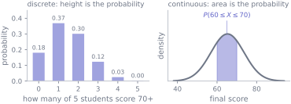
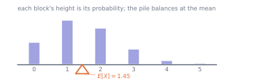
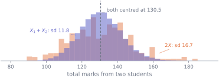

5. Random variables
Statistics · Unit 5
Why this unit is here
S4 attached probabilities to events: things that either happen or do not. That is enough for coins and diagnoses and not much else, because you cannot average an event or add two of them together.
A random variable attaches probabilities to numbers, and numbers can be added, averaged and rescaled. Doing so gives you two quantities — the expected value and the variance — that turn out to obey simple rules, and those rules are what make the rest of statistics possible. Every standard error you will ever compute is one line of algebra away from the variance rules in this unit.
5.1 Before you start
You should be able to:
- compute and interpret a conditional probability — S4;
- say why \(P(A \cap B) = P(A)P(B)\) needs independence — S4;
- read an integral as the area under a curve — M7;
- compute a mean and a variance from data — S2.
Quick check. A fair six-sided die is rolled. What is the probability of rolling a 3, and what is the probability of rolling at most 3?
TipShow the answer
\(P(X = 3) = 1/6\), and \(P(X \le 3) = 3/6 = 1/2\).
You have just used both of the functions this unit is about. The first is the probability mass function, evaluated at one value; the second is the cumulative distribution function, which accumulates everything up to a value.
5.2 The idea
A random variable is a rule that assigns a number to each outcome of a random process. Roll a die, record the face: that is a random variable. Pick a student from the cohort at random, record their final score: so is that.
The convention is a capital letter for the variable and a lower-case letter for a value it might take, so \(P(X = x)\) reads “the probability that the random variable \(X\) turns out to equal the particular number \(x\)”. The distinction is worth respecting: \(X\) is the procedure, \(x\) is one result.
Random variables come in two kinds, and the difference is not a technicality. (Strictly there is a third possibility — a variable can be part lump, part smooth, like a rainfall total that is exactly zero on dry days and continuous otherwise. Such mixtures are real and are handled by combining the two cases; nothing else in these notes needs them.)
A discrete random variable takes values you can list — 0, 1, 2, … — and each one carries a probability of its own. The function \(p(x) = P(X = x)\) is the probability mass function, and its values are genuine probabilities: between 0 and 1, adding to 1 across all the values.
A continuous random variable is one whose probabilities are given by a density, and for such a variable the probability of any single exact value is zero. That is a consequence of the definition rather than of having infinitely many values — a variable can have infinitely many possible values and still put a lump of probability on one of them, as the rainfall example does on zero. Under a density there are no lumps, so asking “what is the probability of a score of exactly 64.7?” has the answer 0, and that is not a defect in the question but a fact about the model.
What carries the probability instead is area. A continuous variable is described by a probability density function \(f(x)\), and
\[ P(a \le X \le b) = \int_a^b f(x)\,dx , \]
the area under the density between \(a\) and \(b\). This is why M7 exists in these notes: a probability, for a continuous variable, is an integral, and it obeys the rules of integration because that is what it is.
Two consequences follow immediately. The total area under a density is 1. And \(f(x)\) itself is not a probability — it can exceed 1 quite legitimately, as long as the width it applies over is small enough that the area does not.
5.3 The mechanics
The cumulative distribution function
One function works for both kinds:
\[ F(x) = P(X \le x) . \]
It runs from 0 up to 1, never decreases, and for a continuous variable it is the accumulated area from the left — so \(F\) is an antiderivative of \(f\), exactly as M7’s fundamental theorem describes. Every “probability of being below this value” that you will meet in S7 and S9 is a value of \(F\), and every quantile is a value of \(F\) read backwards.
Expected value
\[ E[X] = \sum_x x\, p(x) \quad \text{(discrete)} \qquad E[X] = \int_{-\infty}^{\infty} x\, f(x)\, dx \quad \text{(continuous)} \]
Read it as a weighted average: every value the variable can take, weighted by how likely it is. It is the long-run average of the results if you repeated the process for ever, and it is written \(\mu\) when it belongs to a population — the \(\mu\) of S1, which the sample mean \(\bar{x}\) estimates.

Notice that \(E[X] = 1.45\) is not a value the variable can take — you cannot have 1.45 students out of five. An expected value is a balance point, not a prediction.
Expectation is linear, and this is the most useful fact in the unit:
\[ E[aX + b] = a\,E[X] + b, \qquad E[X + Y] = E[X] + E[Y] . \]
The second holds whatever the relationship between \(X\) and \(Y\) — no independence required. That is unusual and worth remembering, because the corresponding statement about variance is not free at all.
Variance
\[ \operatorname{Var}(X) = E\bigl[(X - \mu)^2\bigr] = E[X^2] - \mu^2 , \]
with \(\sigma = \sqrt{\operatorname{Var}(X)}\) the standard deviation. Same idea as S2’s \(s^2\), now attached to the distribution rather than to a sample. The second form is the one to compute with; the first is the one to understand.
The rules look similar to expectation’s and are importantly different:
\[ \operatorname{Var}(aX + b) = a^2 \operatorname{Var}(X), \qquad \operatorname{Var}(X + Y) = \operatorname{Var}(X) + \operatorname{Var}(Y) \;\; \text{if } X \text{ and } Y \text{ are independent.} \]
Three things to take from that pair.
Adding a constant does nothing. Shifting every value by \(b\) moves the mean by \(b\) and leaves every deviation from the mean unchanged.
Scaling squares. Double a variable and its variance quadruples, so its standard deviation doubles. Variance lives in squared units; standard deviations are the ones that scale the way intuition expects.
The sum needs a condition, and it matters. The general statement is always \(\operatorname{Var}(X + Y) = \operatorname{Var}(X) + \operatorname{Var}(Y) + 2\operatorname{Cov}(X, Y)\), with the covariance of S3 in it, and the two terms add cleanly exactly when that covariance is zero. Independence guarantees a zero covariance, which is why it is the condition usually quoted, but it is stronger than necessary: two variables can be uncorrelated and still dependent. Assuming a zero covariance you do not have is how a standard error comes out too small, and a confidence interval too narrow.
The consequence everything else is built on
Put \(n\) independent copies of \(X\), each with mean \(\mu\) and variance \(\sigma^2\), and average them. Expectation is linear, so the mean of the average is \(\mu\). Variance scales by \(a^2\) with \(a = 1/n\), and adds across independent terms, so
\[ \operatorname{Var}(\bar{X}) = \frac{1}{n^2}\, n \sigma^2 = \frac{\sigma^2}{n}, \qquad \text{sd}(\bar{X}) = \frac{\sigma}{\sqrt{n}} . \]
That quantity \(\sigma/\sqrt{n}\) is the standard error of the mean, and the \(\sqrt{n}\) in its denominator is the reason precision is expensive: to halve the standard error you need four times the data. S7 does nothing but explore this formula, and S8 puts it to work. It fell out of two lines of algebra here.
5.4 Worked example
A student drawn at random.
Define \(X\) to be the final score of one student chosen uniformly at random from the cohort’s 238 usable records. That is a genuine random variable, and because we can see the whole population it is one whose \(\mu\) and \(\sigma\) we can compute exactly rather than estimate.
import numpy as np
import pandas as pd
cohort = pd.read_csv("data/cohort.csv")
scores = cohort.loc[cohort["final_score"].between(0, 100), "final_score"].to_numpy()
mu = scores.mean()
sigma = scores.std(ddof=0) # ddof=0: these 238 ARE the population here
print(f"E[X] = {mu:.4f}")
print(f"Var(X) = {sigma**2:.4f}")
print(f"sd(X) = {sigma:.4f}")
print(f"check: E[X^2] - mu^2 = {(scores**2).mean() - mu**2:.4f}")E[X] = 65.2718
Var(X) = 69.9982
sd(X) = 8.3665
check: E[X^2] - mu^2 = 69.9982Note the ddof=0. S2 used \(n-1\) because it was estimating a population from a sample; here the 238 records are the entire population we are drawing from, so there is nothing to correct for.
Now the rules. Rescale to a 0–1 fraction, \(Y = X/100\):
fractions = scores / 100
print(f"E[Y] predicted {mu / 100:.4f} actual {fractions.mean():.4f}")
print(f"Var(Y) predicted {sigma**2 / 100**2:.6f} actual {fractions.var(ddof=0):.6f}")E[Y] predicted 0.6527 actual 0.6527
Var(Y) predicted 0.007000 actual 0.007000The variance fell by a factor of \(100^2\), not 100. Squared units.
Now the part people get wrong. Draw two students independently and add their scores; compare that with drawing one student and doubling.
rng = np.random.default_rng(2026)
two_students = rng.choice(scores, size=(120_000, 2)).sum(axis=1)
one_doubled = 2 * rng.choice(scores, size=120_000)
print(f"X1 + X2 : mean {two_students.mean():7.2f} sd {two_students.std():6.2f}"
f" predicted sd {np.sqrt(2) * sigma:.2f}")
print(f"2X : mean {one_doubled.mean():7.2f} sd {one_doubled.std():6.2f}"
f" predicted sd {2 * sigma:.2f}")X1 + X2 : mean 130.52 sd 11.81 predicted sd 11.83
2X : mean 130.54 sd 16.74 predicted sd 16.73
Same expected total, and the doubled version is 40% wider. Both facts come straight from the rules: expectation is linear either way, but \(\operatorname{Var}(X_1 + X_2) = 2\sigma^2\) while \(\operatorname{Var}(2X) = 4\sigma^2\), and \(\sqrt{4}/\sqrt{2} = \sqrt{2} = 1.41\).
The intuition behind the algebra: two independent students can be unlucky in opposite directions and partly cancel. One student, counted twice, cannot cancel with anything — whatever they did, it happens twice over.
5.5 Try it yourself
Exercise 1 A random variable \(X\) takes the value 0 with probability 0.7 and 1 with probability 0.3.
- Find \(E[X]\) and \(\operatorname{Var}(X)\).
- Now let \(S = X_1 + X_2 + \dots + X_{10}\) be the sum of ten independent copies. Find \(E[S]\) and \(\operatorname{Var}(S)\).
TipShow the solution
\(E[X] = 0(0.7) + 1(0.3) = 0.3\). For the variance, note that \(X^2 = X\) here because \(0^2 = 0\) and \(1^2 = 1\), so \(E[X^2] = 0.3\) and
\[\operatorname{Var}(X) = 0.3 - 0.3^2 = 0.3 \times 0.7 = 0.21 .\]
That shortcut generalises: a variable that is 1 with probability \(p\) and 0 otherwise has mean \(p\) and variance \(p(1-p)\).
\(E[S] = 10 \times 0.3 = 3\), and by independence \(\operatorname{Var}(S) = 10 \times 0.21 = 2.1\), so \(\text{sd}(S) = 1.45\).
A common wrong answer is \(\text{sd}(S) = 10 \times 0.458 = 4.58\) — multiplying the standard deviation by 10 rather than the variance. Standard deviations do not add; variances do.
Exercise 2 A continuous random variable has density \(f(x) = 2x\) for \(0 \le x \le 1\), and zero elsewhere.
- Check that it really is a density.
- Find \(P(X \le 0.5)\).
- Find \(E[X]\).
TipShow the solution
A density must be non-negative — \(2x \ge 0\) on \([0,1]\) — and must enclose a total area of 1:
\[\int_0^1 2x \, dx = \bigl[x^2\bigr]_0^1 = 1 . \checkmark\]
Note in passing that \(f(1) = 2 > 1\). A density is allowed to exceed 1; only its integral is constrained.
\(P(X \le 0.5) = \int_0^{0.5} 2x\,dx = \bigl[x^2\bigr]_0^{0.5} = 0.25\). Not 0.5 — the density puts more weight on the right, so the left half of the range holds less than half the probability.
\(E[X] = \int_0^1 x \cdot 2x \, dx = \int_0^1 2x^2 dx = \bigl[\tfrac{2}{3}x^3\bigr]_0^1 = \tfrac{2}{3}\).
Sanity check: \(2/3\) is to the right of the middle of the range, which matches a density that rises towards 1.
Exercise 3 Two exam papers are each marked out of 50. A student’s marks \(X\) and \(Y\) each have mean 30 and standard deviation 8.
- What is the expected total, \(E[X + Y]\)?
- What is \(\text{sd}(X+Y)\) if the two marks are independent?
- In reality a strong student tends to do well on both. Does the true standard deviation of the total go up or down relative to (b)?
TipShow the solution
\(E[X+Y] = 30 + 30 = 60\), and this needs no assumption about independence. Linearity of expectation is unconditional.
\(\operatorname{Var}(X+Y) = 64 + 64 = 128\), so \(\text{sd} = \sqrt{128} = 11.3\). Note this is well below \(8 + 8 = 16\).
Up. With positive correlation the covariance term is positive:
\[\operatorname{Var}(X+Y) = 64 + 64 + 2\operatorname{Cov}(X, Y) > 128 .\]
At the extreme of a perfect positive relationship, \(Y = X\), the total is \(2X\) with standard deviation 16 — the case in this unit’s worked example. Independence is what lets the two marks partly cancel; correlation removes that cancellation. Assuming independence when it does not hold makes your stated uncertainty too small, which is the dangerous direction to be wrong in.
5.6 Check it in Python
The expected value is a long-run average, and that is a claim you can watch come true. Draw students one at a time and keep a running mean.
rng = np.random.default_rng(7)
draws = rng.choice(scores, size=2000)
running = np.cumsum(draws) / np.arange(1, draws.size + 1)
for k in [10, 100, 1000, 2000]:
print(f"after {k:>4} draws: running mean {running[k-1]:.3f} "
f"gap from E[X] {running[k-1] - mu:+.3f}")after 10 draws: running mean 61.170 gap from E[X] -4.102
after 100 draws: running mean 63.972 gap from E[X] -1.300
after 1000 draws: running mean 64.993 gap from E[X] -0.279
after 2000 draws: running mean 65.120 gap from E[X] -0.152The gap shrinks, unsteadily — this is the law of large numbers, and note what it does and does not promise. The running mean converges to \(\mu\); it does not promise the gap shrinks at every step, and it says nothing at all about any individual draw.
Next, the variance rules, all three at once:
pairs = rng.choice(scores, size=(200_000, 2))
X, Y = pairs[:, 0], pairs[:, 1]
print(f"Var(X) {X.var():9.4f} (population value {sigma**2:.4f})")
print(f"Var(X + 10) {(X + 10).var():9.4f} predicted {sigma**2:.4f}")
print(f"Var(3X) {(3*X).var():9.4f} predicted {9*sigma**2:.4f}")
print(f"Var(X + Y) {(X + Y).var():9.4f} predicted {2*sigma**2:.4f}")Var(X) 69.8402 (population value 69.9982)
Var(X + 10) 69.8402 predicted 69.9982
Var(3X) 628.5615 predicted 629.9842
Var(X + Y) 139.5885 predicted 139.9965And now the failure mode. The addition rule needs a zero covariance, and it is easy to write code that quietly violates it. Here \(Y\) is not a second draw at all — it is the same student again:
Y_same = X # NOT an independent second draw
total = X + Y_same
assert np.isclose(total.var(), 2 * sigma**2, rtol=0.02), (
f"Var(X+Y) came out {total.var():.1f}, but the independence rule "
f"predicts {2 * sigma**2:.1f}"
)--------------------------------------------------------------------------- AssertionError Traceback (most recent call last) Cell In[9], line 3 1 Y_same = X # NOT an independent second draw 2 total = X + Y_same ----> 3 assert np.isclose(total.var(), 2 * sigma**2, rtol=0.02), ( 4 f"Var(X+Y) came out {total.var():.1f}, but the independence rule " 5 f"predicts {2 * sigma**2:.1f}" 6 ) AssertionError: Var(X+Y) came out 279.4, but the independence rule predicts 140.0
Double, not doubled again: the variance is \(4\sigma^2\) because \(X + X = 2X\). In this cell the mistake is obvious. In a real analysis it looks like using the same patient twice, or treating repeated measurements as independent observations, and it inflates nothing visible — the mean comes out fine, and only the stated uncertainty is wrong.
print(f"Var(X + X) {(X + X).var():9.4f}")
print(f"Var(X) + Var(X) + 2Cov(X, X) "
f"{X.var() + X.var() + 2*np.cov(X, X, ddof=0)[0, 1]:9.4f}")Var(X + X) 279.3607
Var(X) + Var(X) + 2Cov(X, X) 279.3607The general formula, with the covariance term restored, gets it right. The independence version is a special case in which that term happens to be zero.
5.7 Common wrong turns
Where this usually goes wrong
- Reading a density as a probability
- \(f(x)\) can be greater than 1. It is a probability per unit of \(x\), and only an area under it — a density times a width — is a probability. For a continuous variable \(P(X = x) = 0\) for every single \(x\).
- Adding standard deviations
- Variances add across independent variables; standard deviations do not. Two independent marks with sd 8 give a total with sd \(\sqrt{128} = 11.3\), not 16. Convert to variance, add, convert back.
- Assuming independence because the code drew twice
- Independence is a property of the design, not of the number of lines you wrote. Two measurements on the same person, two days from the same week, two students in the same tutorial group — none of these are independent, and each carries a covariance term that the simple addition rule leaves out.
- Expecting the expected value
- \(E[X] = 1.45\) students, \(E[X] = 3.5\) on a die. An expectation is a balance point and often not a possible outcome. It is what the average converges to, not what you should predict for one trial.
- Believing the law of large numbers applies to short runs
- It says the average settles down eventually. It does not say a run of bad luck will be compensated by a run of good luck; the earlier draws are simply diluted by the later ones.
- Using \(n-1\) when you have the whole population
- The correction exists because \(\bar{x}\) was estimated from the same data. If the values in front of you are the entire population, divide by \(n\). Getting this wrong is harmless at \(n=238\) and material at \(n=5\).
5.8 Check yourself
Answers are at the foot of the page. Give a reason as well as an answer.
\(X\) has mean 10 and standard deviation 3. What is the standard deviation of \(4X - 7\)?
- 5 b. 12 c. 33 d. 144
- A continuous random variable has \(f(2) = 1.8\). Is that a problem?
- \(X\) and \(Y\) each have variance 9. Is \(\operatorname{Var}(X + Y) = 18\)?
- You average \(n\) independent measurements. By what factor must \(n\) increase to halve the standard error?
- True or false: \(E[X + Y] = E[X] + E[Y]\) requires \(X\) and \(Y\) to be independent.
TipShow the answers
(b), 12. \(\operatorname{Var}(4X - 7) = 4^2 \times 9 = 144\), so the standard deviation is \(\sqrt{144} = 12\). Equivalently, multiply the standard deviation by \(|4|\). Option (d) is the variance, offered because reporting a variance where a standard deviation was asked for is the standard slip; the \(-7\) affects neither.
No. A density is not a probability; it is a probability per unit of \(x\). A value of 1.8 is fine provided the total area under \(f\) is 1 — for instance a variable spread uniformly over an interval of width \(0.5\) has density 2 throughout.
Only if they are independent (or, more weakly, uncorrelated). In general \(\operatorname{Var}(X+Y) = 9 + 9 + 2\operatorname{Cov}(X,Y)\), which can be anything from 0 (when \(Y = -X\)) to 36 (when \(Y = X\)).
Four times. The standard error is \(\sigma/\sqrt{n}\), so halving it needs \(\sqrt{n}\) to double, so \(n\) to quadruple. This is the single most useful piece of arithmetic in study design, and S8 returns to it.
False, and this is the asymmetry worth remembering. Linearity of expectation holds for any \(X\) and \(Y\), however strongly related. It is the variance rule that needs independence.